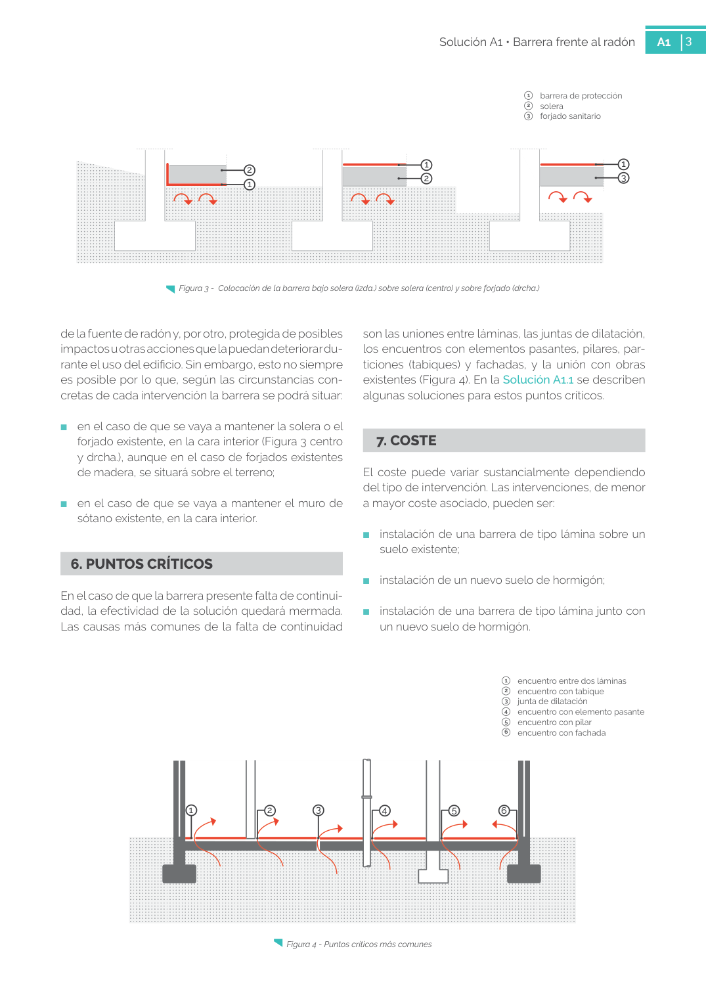

GUIA · 7. COSTE · versión sin-fecha · capa guia
Formatos: JSON compacto · Markdown · PDF fuente
Ámbito del documento · texto del ámbito · documento y tablas
Tipo: tablas, figuras · nivel 1 · sección estimada: 7. COSTE · padre:
7. COSTE El coste puede variar sustancialmente dependiendo del tipo de intervención. Las intervenciones, de menor a mayor coste asociado, pueden ser: ■ instalación de una barrera de tipo lámina sobre un suelo existente; ■ instalación de un nuevo suelo de hormigón; ■ instalación de una barrera de tipo lámina junto con un nuevo suelo de hormigón. Figura 4 - Puntos críticos más comunes

PDF fuente redistribuible: copia fiel enlazada en esta página (SHA256 verificado).